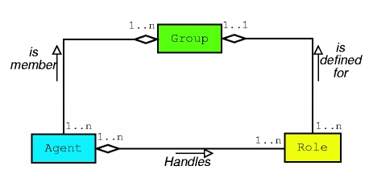
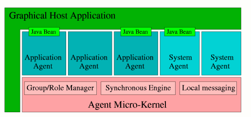

Version 4.0
Abstract
This document describes how to develop agents with the MadKit agent platform.
Note: This document is not finished. Comments and unfinished parts are surrounded by double brackets. For instance {{link}} means that there is a missing link here.
Table of Contents
MadKit (Multi-Agent Development Kit) is a versatile agent platform. Among its features:
A major characteristic in agent research and applications is the high heterogeneity of the field: both agent model heterogeneity, characterizing agents described and built with different models and formalisms; language heterogeneity, with agents using different communication and interaction schemes, and finally applicative heterogeneity, as multi-agent systems are used with various goals and in many applicative domains.
We believe that being able to take advantage of this diversity of approaches simultaneously is important to build complex systems, while keeping heterogeneity manageable with appropriate conceptual models and software toolkits.
The MadKit toolkit was motivated by the need to provide a generic, highly customizable and scalable multiagent platform. The goal was to built a foundation layer for various agent models, and to make the basic services fully extensible and replaceable.
In order to be able to program in MadKit, it is important to understand the general conceptual model which underlies it. This section is dedicated to a quick presentation of the AGR model and of the main features of MadKit from a programmer's point of view.
We will just summarize here the Aalaadin Agent/Group/Role model. However, we will not address issues like its formal operational semantics, nor make a general overview of the Aalaadin project. See our online papers for more information.
Figure 2.1. Agent/Group/Role Model

The Aalaadin model is based on three core concepts: agent, group and role.
In this definition, an organization is viewed as a framework for activity and interaction through the definition of groups, roles and their relationships. But, by avoiding an agent-oriented viewpoint, an organization is regarded as a structural relationship between a collection of agents. Thus, an organization can be described solely on the basis of its structure, i.e. by the way groups and roles are arranged to form a whole, without being concerned with the way agents actually behave, and multi-agent systems will be analyzed from the "outside", as a set of interaction modes. The specific architecture of agents is purposely not addressed.
The model places no constraints on the internal architecture of agents. An agent is only specified as an active communicating entity which plays roles within groups. This agent definition is intentionally generic to allow agent designers to adopt the most accurate definition of agent-hood relative to their application. The agent designer is responsible for choosing the most appropriate agent model as internal architecture.
Groups are defined as atomic sets of agent aggregation. Each agent is part of one or more groups. In its most basic form, the group is only a way to tag a set of agents. In a more developed form, in conjunction with the role definition, it may represent any usual multi-agent system.
Groups have the following characteristics:
An agent can be a member of n groups at the same time.
Groups can freely overlap.
A group may be founded by any agent, and an agent may request the admission to any group (whether it will be accepted or not is another story).
With additional system agents, a group can be either local or distributed on many machines.
The role is an abstract representation of an agent function, service or identification within a group. Each agent can handle multiple roles, and each role handled by an agent is local to a group. Handling a role in a group must be requested by the candidate agent, and is not necessarily awarded. Thus, modeling of abstract communication schemes can defined from roles, guiding the design process.
The MadKit platform is built around this agent/group/role model. In addition to the three core concepts, the platform adds three design principles:
MadKit itself is a set of packages of Java classes that implements the agent kernel, the various libraries of messages, probes and agents. It also includes a graphical development environment and many system and demonstration agents.
The basic philosophy of the MadKit architecture is to use wherever possible the platform for its own management: any service beside those assured by the micro-kernel are handled by agents. Thus the platform is not an agent platform according to the classical sense. The reduced size of the agent kernel, combined with the principle of modular services managed by agents enable a range of multiple, scalable platforms with simultaneous specialized agent models libraries.
Figure 2.2. MadKit architecture

The MadKit micro-kernel is a small (less than 50 Kb) and optimized agent kernel. The term "micro-kernel" is intentionally used as a reference to the role of micro-kernels in the domain of OS engineering. We could directly translate their motto into:
...incorporating a number of key facilities that allow the efficient deployment of services.
The MadKit kernel handles only the following tasks:
Control of local groups and roles: As most of the interoperability and extensibility possibilities in MadKit relies on the organizational layer, it is mandatory that group and role are handled at the lowest level in the platform, to provide this functionality to any agent The micro-kernel is responsible for maintaining correct information about group members and roles handled within the groups. It also checks if requests made on groups and roles structures are correct.
Agent life-cycle management: The kernel also launches (and eventually kills) agents, and maintains tables and references of agent instances. It is the only module in MadKit that owns direct references to the actual agents. It also handles the agent personal information and assigns to it, upon creation, a globally unique identifier : the AgentAddress (composed of the kernel address, plus the agent identification on the local kernel). This identifier can be redefined to accept standardized agent naming schemes.
Local message passing. The kernel manages routing and distribution of messages between agents. The basic mechanism relies on a copy-on-write implementation to avoid unnecessary operations. The kernel itself is wrapped in an special agent, the KernelAgent, which is created at bootstrap. Control and monitoring of the kernel occurs within the agent model.
The kernel itself is fully extensible through kernel hooks or kernel operations. Any entitled agent (i.e. an agent that has been allowed to be member of the system group) can request to the KernelAgent to subscribe to a kernel hook or invoke operations on the kernel.
These hooks are the generic subscribe-and-publish scheme allowing extension of the core behavior of the platform. Every core function in the kernel (adding an agent to a group, launching an agent, sending a message) implements this mechanisms.
Any number of agents can subscribe to a monitoring hook. In such a hook, invocation of a kernel operation make the KernelAgent send an information message to the agents that requested a monitor hook on this operation, with the arguments of this operation as the content of the message. For instance, this is how the agents that monitor the population or organization in the platform are written.
These hooks are similar to the previous type, but only one agent can hold an interceptor hook on a given kernel operation. Furthermore, an interceptor hook prevents the execution of the implemented kernel operation. It is particularly useful to write distributed messaging agents, group synchronizers, security control in groups, etc. by changing the behavior of a basic operation. The reduced number of kernel calls and the simple underlying model helps the modification of these calls while preserving their semantics.
When a kernel call with active hooks is invoked, the information is routed to the KernelAgent which does the message transmission to the agent which subscribed.
We first described how hooks offer a way to monitor or intercept kernel calls, but actions can also be directly invoked in the kernel, also through an interaction with the KernelAgent.
For instance, a system SocketCommunicator agent enable distribution of MadKit applications over the network. It injects in the local kernel a message received through a socket connection with a distant MadKit platform to implements distributed messaging.
The generic agent is a class defining basic life-cycle (what to do upon activation, execution, and termination). Agents are developed by inheriting from the AbstractAgent class. This class defines methods that identify the agents, handle message passing, and provide group and role management (creation, join, requests, delegation, ...)
MadKit uses the AGR model for its own usage. All services, apart from those provided by the kernel are performed by agents using groupes and roles to perform their own tasks. For instance, remote communication, i.e. communications that are performed between agents situated in different kernels, are handled by a specific Communicator agent.
An important aspect of MadKit is the possibility to define distributed applications without being concerned by low level constructs such as sockets, threads, URL, etc. No modification of code is needed to distribute a MadKit application. Once the basic principles of MadKit, i.e. using AGR, sending messages, referencing agents through their agent address, are applied, it is straightforward to make it work on several kernels. See section {{section}} to learn how to setup a distributed network of MadKit kernels, and see section {{section}} to learn the fundamental tips and tricks of distributed programming, and the main errors a programmer should avoid to make his or her application transparently work in a distributed environment.
The concept of community comes from the concept of groups applied to madkit kernels. A community is a group of kernels. Each kernel is represented by its SiteAgent, and a kernel may or may not enter this community. A community may be viewed as a distributed application spread over a computer network. A community contains a set of groups but a group may only be part of a single community.
The MadKit graphical interface is based on the Java Bean specification. Each agent is solely responsible for its own graphical interface in every aspect (rendering, event processing, actions...). An agent interface can be a simple label, a complex construction based on multiple widgets, or a legacy bean software module.
A "graphic shell", called the MadKit desktop or desktop for short, launches the kernel and setup the interfaces for the various agents and manages them in a global GUI (for instance: each agent has its own window, or is mapped in a global worksheet, or is combined with another agent interface, etc.).
As the agent graphic interfaces are decoupled from the agent kernel, the platform can run in various modes (desktop, applet, console only, etc.) and the agent code does not need any modification.
MadKit comes as a set of plugins. This structure allows various agents and features to be added as simple module one may add, remove and update at its own needs. Each plugin is controlled by an ant file from which it is possible to recompile, install and desinstall a module.
In this section we describe the plugin architecture of MadKit 4. MadKit is based on a plugin structure which allows new features and agents to be added as kind of modules called plugins. A plugin is made of files and resources which may be compiled, installed, updated, etc. using ant, a fantastic development tool written in Java.
madkit
+--- bin // contains launcher scripts
|
+--- lib // contains Ant jars plus necessary dependencies
|
+--- docs // contains documentation
|
+--- plugins // contains all the plugins description
+---- plugin1 // the different plugins
+---- plugin2 //
+---- plugin3 //
Each plugin is related to a specific jar in the lib directory and its
description is associated to a specific directory of the same name,
which is located in the plugins directory of MadKit. For instance,
the demos plugin is related to the demos.jar file
situated in the lib directory, and its description can be found in the
directory demos located in the plugins directory.
plugin's name
+--- src // containts the sources of the java files and the ressources to be included in the jar.
| +--- package name of java files
| +--- images // the images to be included as resources in the jar.
|
+--- scripts // contains the text files used by agents, and the sources of the scripted files.
|
+--- docs // contains the documentation of the plugin
|
+--- build.xml // the ant file used to compile, install, etc.. the plugin
+--- optional: <plugin>.cfg // a configuration file (in XML format) which may be used to initiate a set of agents
+--- optional: <plugin>.bat // a .bat file which starts MadKit with no desktop
| // with only the agents defined in the <plugin>.cfg file
+--- optional: <plugin>.sh // a .sh file which starts MadKit with no desktop
| // with only the agents defined in the <plugin>.cfg file
+--- optional: <plugin>_desktop.bat // a .bat file which starts MadKit with the desktop
| // and load the agents defined in the <plugin>.cfg file
+--- optional: <plugin>_desktop.sh // a .sh file which starts MadKit with the desktop
// and load the agents defined in the <plugin>.cfg file
The build.xml file is very important because it contains
all the information needed to compile the plugin and make the jar, create
the API documentation, and clean the plugin. Here are all the targets
offered by this build.xml file:
| Name | Description |
| jar (default) | Compile the plugin and create the jar. |
| docs | Create the API documentation using javadoc |
| clean | Remove the build directory created during the java compilation process |
| real-clean | Delete all the files that are automatically created from the sources (api doc, jar, .class, etc) |
| src-dist | Create a distribution of the plugin with only the sources. Must be compiled to be used |
| bin-dist | Create a distribution with only the executables and no sources |
| doc-dist | Create a distribution with the executables and the documentation |
| standalone-dist | Create a distribution which may be run as a standalone application. |
| all | Create all the previous distribution (except the following one) |
| plugin-dist | Create a .zip file of the plugin and put it in the distrib directory. This is used to create a plugin distribution which may be used by an automatic installation process (installer {{link}}or MadKit update {{link}}). |
The targets you will use most often are the 'jar' target (default one), the 'docs', and the 'real-clean' one. To execute such a target, go to the directory of the plugin, and type:
> ant <target>
where <target> is the name of one the targets (or only ant
alone if you want to use the default target).
It is also possible to execute such a target directly from the explorer {{link}} of MadKit
To define a new plugin, copy the template plugin which has been
defined for this purpose and give it the name of the plugin. Then modify
the .xml file as follows.
It is possible to program MadKit agents in several languages: Java, Python, Scheme (Kawa), BeanShell and Jess. More languages will be added in the future. It is actually quite straightforward to add a new scripting language in MadKit.
Java is the main language of MadKit because MadKit has been programmed in Java. However, because Java is a compiled language, it is somehow more difficult to develop agents in Java because you need to compile your agent and the associated classes, make a Jar, place your jar in a specific location, and restart MadKit to get your agents working. Conversely, if you use one of the available scripting languages (i.e. Python, Scheme (Kawa), BeanShell and Jess, for the moment), it is easier to get your agent working quickly. On the contrary, Java agents are more efficient. So it is up to you to start with one of the available languages.
First, the basic structure of an agent will be introduced. Then we will show how to program a new agent from scratch in the different available languages. Then the section {{section}} will be dedicated to some of the techniques, tips and tricks one has to use to make his or her agents work efficiently in a concurrent and/or distributed environment.
An agent, in MadKit, is made of four optional sections:
The activate section, which contains some code to be executed when an agent is created.
The live section, which contains the main code of the agent. Generally, this section is made of a (quasi) infinite loop describing the behavior of the agent.
The end section, which contains some code which is executed when an agent is terminating (either because it finishes its behavior or because it is killed).
The initGUI section, which contains the description of a Java bean component which is to be used as the graphic interface of the agent, and aimed at replacing the default graphic interface.
In MadKit, an agent is an object class that inherits from AbstractAgent class or one of its subclasses, and has the following capacities:
The main agent class (AbstractAgent) does not implement a specific execution policy. The Agent subclass adds support for concurrent, thread-based execution, which is the natural model for coarse-grained collaborative or cognitive agent. An interface (Referenceable), with the help of additional classes, implements synchronous execution through external schedulers, allowing reactive or hybrid architectures with many fine-grained agents.
Communication is achieved through asynchronous message passing, with primitive calls to send a message to another agent designated by its address, or with the higher-level version that broadcasts messages to agents playing a given role in a specific group.
Every agent, regardless of its specific behavior model, has access to the organizations (groups and roles). The main agent class (AbstractAgent) provides actions and requests on this information. The agent developer is completely free to define the agent behavior, but the organizational view will be always present, and can gather highly heterogeneous agents.
To compile your own agent, you'll probably have to import classes from the madkit.kernel package, so you must have the madkit.jar class archive somewhere in your CLASSPATH environment variable.
In the agent life-cycle, some functions are defined at AbstractAgent level, and other in the various subclasses that define more precisely its execution. This point is important as an agent can be executed within its own thread (by using the Agent class), or through the synchronous engine (see the Synchronous Engine guide). Thus, what is found in the AbstractAgent class is only a part of the description of the whole agent life-cycle
All abstract agents contain two specific sections, the activate and end section:
Activate section
When an agent is created, the kernel calls its activate() method. This method can be seen as a kind of "constructor" in the agent world. When an agent is instantiated and the constructor called, the kernel has not already setup the internal structures and registered it, thus you cannot use any of the methods of the AbstractAgent class (for example, to set up initial groups and roles)! All initialization of an agent must be done in the activate() method.
End section
When an agent terminates, due either to a normal termination of its behavior or a request to be killed (from the graphical host, from a system agent, ...), the kernel calls its end() method. However, this functionality is not as important as the activate(), and is rarely used.
An important point of agent life-cycle management is being able to launch new agents from an agent. To instantiate a subclass of AbstractAgent is not enough. It is necessary to register the agent instance to the social context (i.e. tables of groups and roles) managed by the kernel using the launchAgent(...) method.
An agent may also be killed using the killAgent(...)method.
Important: only the original launcher of an agent (i.e. the agent that has launched it), or the agent itself, may kill this agent
The standard class for information exchange in MadKit is Message. This class only defines things like sender, receiver or date of emission, so it's mostly used through specialized subclasses. Messages receivers and senders are identified thanks to their AgentAddress. MadKit does not enforce a standard interaction mechanism. Such a mechanism can be defined on an ad-hoc basis, or built in a specific agent model library.
Note: MadKit provides several kinds of predefined messages such as StringMessage, XMLMesssage and ActMessage. The latter is the starting point for defining ACLMessages and KQMLMessages. You may define your own class of message, by letting your class inherit from the class Message.
The sendMessage(AgentAddress, message) call is the basic, low-level message sending operation, and transmit a message to an AgentAddress. The sender field of the message is set up automatically by the kernel. These AgentAddress can be obtained through another agent, or more frequently by requesting the group and role system.
For instance:
AgentAddress otherAgent = getAgentWithRole("travel", "contract-net", "bidder");
sendMessage(otherAgent, new ContractMessage("your-offer?"));
|
sends a message of type ContractMessage to the agent
obtained from the getAgentWithRole(...)
primitive.
A higher-level version exists, which broadcasts a message to all agents playing a specific role in a group within a specific community. There are two forms of the broadcast procedure: broadcastMessage(community, group, role, message) and broadcastMessage(group, role, message) which uses the community "public" as a default.
For instance:
broadcastMessage("travel", "marketgroup", "provider", new ACTMessage("ask-for-bid","travel-proposal"));
|
broadcast a message to all agents with the role "provider", in the group "marketgroup" of the community "travel'".
Upon reception, the messages are put by the kernel in a message box owned by the agent. It is a thread-safe unprioritized FIFO.
At the basic level, there are two low-level calls for message handling in agents. The isMessageBoxEmpty() check returns false if an unread message still is in the queue. The nextMessage() method returns the first unread message and removes it from the message box.
For instance:
if (!isMessageBoxEmpty())
{
Message m = nextMessage();
println("The sender was: "+ m.getSender());
}
|
Note: Threaded agents, i.e. agents that inherits from the class Agent, may use the blocking version of the nextMessage method, called waitNextMessage. Very often, this method is called in a loop:
while (true)
{
Message m = waitNextMessage();
println("The sender was: "+ m.getSender());
}
|
It is a good habit not to put waitNextMessage anywhere in your code. See the section on threaded agents.
The group and role system is always available to an agent and provides both action and information calls.
Table 3.1. Group/Role API
The group API just takes the group name as parameter (a simple string) and the role-related calls always take the group name and the role name (also a string).
Here are their definition:
Creates the group g in the community c if this parameter is present and in "public" if not. The group is distributed if the boolean parameter d is true and local (i.e. agents are not visible from distant kernels) otherwise. The s parameter is used to describe the overall structure of the group, but this feature is not used yet. The a parameter must be a GroupIdentifier i.e. an object which implements a security manager/authorization mechanism that consult agents before letting them enter into the group. See section {{section}} for more information on creating groups with authorization elements.
Example:
createGroup(true,"foo","myGroup",null,null) |
creates a distributed group "myGroup" in the community "foo" with no description and no authorization element.
createGroup(false,"myGroup",null,null) |
creates a local group "myGroup" in the community "public" with no description and no authorization element.
The current agent requests to play the role r within the group g in the community c if this parameter is present and in "public" if not. The m parameter is a "member card" that the current agent may use to enter the group and obtain this role, which may be null if the group g has no security manager.
Returns the following values: 1 : operation success; -1 : access denied; -2 : the role is already handled by this agent; -3 : the group does not exist; -4 : the community does not exist.
Example:
requestRole("foo","myGroup","player",null)
|
Requests to play the role "player" in the group "myGroup" with regards to the community "foo" with no member card.
Leaves the role r which exists in the group g of community c if the parameter is present, or of community "public" if not. If the current agent plays only the role r in g, then it leaves the group.
Leaves the group g of community c if the parameter is present, or of community "public" if not.
Returns true if the community c exists, i.e. if the kernel (represented by the SiteAgent) is present in this community.
Returns true if the group g exists in the community c if the parameter is present, or exists in the community "public" if not. Returns false otherwise.
Returns true if the role r of the group exists in the community c if the parameter is present, or exists in the community "public" if not. Returns false otherwise.
Returns an array of String containing the names of the groups of which the current agent is a member. Groups are taken from the community c if the parameter is present or of the community "public" if not.
Returns an array of String containing the names of the groups which belongs to the community c if the parameter is present, or which belongs to the community "public" if not.
Returns an array of String containing the names of all roles played by the current agent in the group g. The group is taken from the community c if the parameter is present or of the community "public" if not.
Returns an array of String containing the names of all roles existing in the group g. The group is taken from the community c if the parameter is present or of the community "public" if not. Note: The current agent MUST be a member of the group g to get this information
Returns an array of String containing the names of all communities in which the current kernel (through its SiteAgent) is present. By default, contains at least one element, the "public" community.
Returns an array of AgentAddress representing all the agents playing the role r in the group g. The group is taken from the community c if the parameter is present or of the community "public" if not. Note: The current agent MUST be a member of the group g to get this information
Example:
AgentAddress[] agList = getAgentsWithRole("foo","myGroup","aRole");
for (int i=0;i<agList.length;i++)
sendMessage(agList[i],new StringMessage("salut coco!"));
|
Returns one agent taken at random from the list returned by getAgentsWithRole.
The MadKit graphic model is based on independent graphic components, using the Java Beans specification for building graphical components..
Each agent is solely responsible for its own graphical interface, in every aspect (rendering, event processing, actions...) An agent interface can be a simple label, a complex construction based on multiple widgets, or a legacy bean software module. A "graphic shell"(which is usually the MadKit desktop) launches the kernel and setup the interfaces for the various agents and manages them in a global GUI (for instance: each agent has its own window, or is mapped in a global worksheet, or is combined with another agent interface, ...).
As the graphic shell is a classic software module, it can be wrapped in an agent for maximum flexibility, allowing control of other agent interfaces by a regular agent that can be part of any interaction scenario.
Associating a bean to an agent is quite straightforward:
Define a initGUI() method. This function is automatically called at agent creation by the kernel if a graphical shell (such as the G-Box) has been registered.
Call the setGUIObject(...) method, with the bean you want to associate as parameter. The best place to do this is in the initGUI() implementation.
There are also two additional calls: getGUIObject() returns the bean currently associated to the agent; and with the hasGUI() method it is possible to check if the agent runs in GUI mode (i.e. the platform offers a graphic shell or not).
For instance, one could find in some agent code:
protected void initGUI()
{
JLabel myLabel = new JLabel("Ulysses");
setGUIObject(myLabel);
}
|
This would simply create a simple word "Ulysses" with the Java JLabel class, and set it as the agent graphic interface.
The easiest way to build an agent with an associated graphic interface is to have two classes (or two set of classes), one being the implementation of the agent, and the other coding the graphical interface. You'll find in the examples provided with the MadKit distribution, many application of this principle.This clear distinction also has the advantage of keeping the agent GUI code completely standard. You can use your favorite RAD tool to code your interface, or use a standard off-the-shelf Java Bean as your agent interface.
There is also some miscellaneous calls that do not fall in the above categories. The getAddress() makes the agent return its own AgentAddress.
The couple setName(...) and getName() manipulate the agent name. The agent name can be altered during the agent life. The only thing that is unique and is used for messaging and group/role management is the AgentAddress. The getAgentInformation() returns an agent "identity card" (creator, age, ...).
Agents also have a minimal text output mechanism. The println(...) method outputs a line of text. The actual output can be redirected on a file, on the console or in an automatically launched GUI, depending on the platform configuration. Hackers can redirect this output stream with the setOutputWriter(...) method. A related utility is the debug(...) method, which outputs the parameter string only if a debug flag is set. This flag can be manipulated at run-time with the setDebug(...) call. The debug stream can also be redirected with the setDebugWriter(...) method.
A very important subclass of the AbstractAgent is the Agent class. This class defines an agent running in a concurrent thread. It is the most direct and easy way to define an agent.
With this class, the behavior of an agent must be coded in the live() method, which will be called automatically upon agent creation. Agents being defined with the Agent or one of its subclasses are recognized by the kernel, which handles the job of creating and starting the thread which will execute the live().
The class also provides a blocking version of the message reception call: waitNextMessage(). If this method is invoked and there is something in the message box, it returns immediately. Otherwise, the thread is suspended until something arrive.
An utility method, pause(...) is also provided, and can suspend the thread for the number of milliseconds given in parameter.
A classic agent implementation is an endless loop waiting for messages and dispatching them according to the message type:
protected void live()
{
while(true)
{
Message e = waitNextMessage();
if (e instanceof StringMessage)
handleMessage((StringMessage)e);
else if (e instanceof KQMLMessage)
handleMessage((KQMLMessage)e);
else if (e instanceof Message)
handleMessage(e);
}
}
|
Example: here is the Hello agent which is defined in the template plugin. This agent first prints the message "Hello I'm an agent", then creates a group and attempt to play a role into it. If this work, it goes into an infinite loop, waiting for a message to handle it. This is obviously a very basic behavior. You should be able to do better :-)
public class Hello extends Agent {
String myCommunity="myCommunity";
String myGroup="myGroup";
String myRole="myRole";
boolean alive = true;
public void activate(){
println("Hello I'm an agent !");
// create a distributed group
int r = createGroup(true, myCommunity, myGroup, null, null);
if (r != 1)
alive =false;
else
requestRole(myCommunity, myGroup, myRole);
}
public void live()
{
println("Hello world...");
while(alive){
Message m = waitNextMessage();
handleMessage(m);
}
}
void handleMessage(Message m){
// You should describe here the agent's behavior
// upon reception of a message
}
public void end()
{
println("\t That's it !!! Bye ");
pause(2000); // just to be abloe to see the last message..
}
}
|
Table of Contents
This chapter tries to help the developer by guiding him or her in the intricaties of agent and distributed programming. We will see also how to avoid some of the most classical pitfalls a programmer should avoid. Here are some of the most well known:
| Getting a value in return of a message |
| Working with many agents at once |
| Getting the right answer |
| Troobleshooting |
| Passing arguments |
| Accessing remote agents |
| Displaying information about a remote agent |